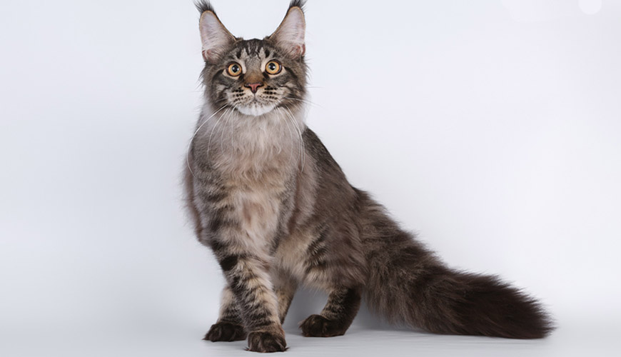
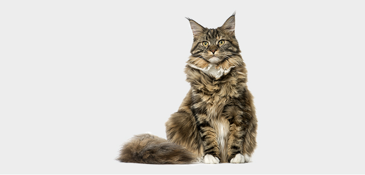
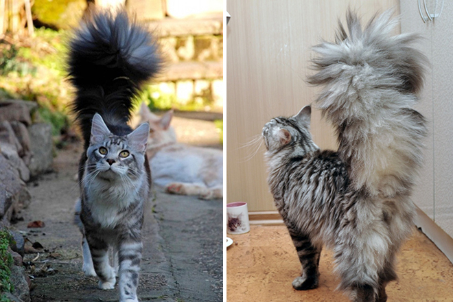

Мейн кун, Мейнська єнотова (англ. Maine coon, МСО) — порода кішок, родом зі штату Мен у США,
де вони жили на волі й добре пристосувалися до несприятливих погодних умов.
Один погляд на параметри тварини - і стає зрозуміло, що це найбільша домашня кішка Землі. Достовірних свідчень про походження Мейн-кунів не існує, є тільки красиві легенди
і припущення фелинологов. Назва породи складено з назви штату Мен, США,
і похідною від «Рекун» (єнот по-англійськи).
Великі мислителі, куни володіють високим інтелектом, логічні в діях і дуже добре запам'ятовують команди і окремі слова. Дивно, але коти-батьки беруть найактивнішу участь у вихованні кошенят, що мало кому властиво з котячих.
| Представники розплідника | Характеристика |
|---|---|
|  | Диво та й годі малюк кун, великий, з відмінним апетитом, привчений до лотка (туалету). Батьки: Матуся - чорний солідний. (7кг, 1.6 року) Папа - білий, величезний. (Вага 13кг, 10 років). Дата народження 04.04.19 |
|  |
Батьки ну дуже дуже балакучі, і ласкаві, навіть кіт))) Скрізь бігають за нами навіть ви ліс!))) Дуже прив'язані до нас, просто всюди з нами, фото і відео додатково скину.Батьки: Мама колір Чорний Таббі, Папа колір Чорний Солід, з бурштиновими очима! Папа
93 см, вага 8 -9кг, влітку менше звичайно) Великі лапи, морда коробочкою, дуже довгі кісточкі.Длінное тіло. Мама 92 см, вага до 8 кг. Дата народження 14.06.18 |
|  | Дуже мила, ніжна, товариська дівчинка! Дуже любить людей, ніжна, ласкава, товариська. Грайлива, активна, з хорошим апетитом. Забарвлення черепаховий, fs02 24. Щеплена за віком, манерам навчена. Дата народження 02.07.2018 |
 Наша стрінка на Facebook
Наша стрінка на Facebook
 Наша стрінка на Instagram
Наша стрінка на Instagram